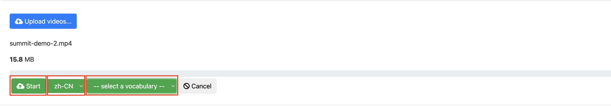
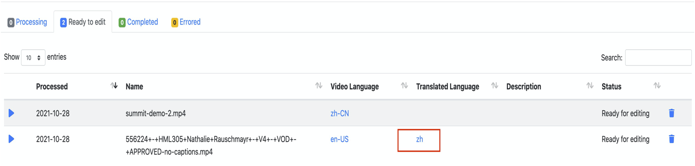

部署解决方案
在部署解决方案之前，建议您先查看本指南中有关架构图和区域支持等信息，然后按照下面的说明配置解决方案并将其部署到您的账户中。
部署时间：约10分钟
部署概述
您可以在亚马逊云科技上部署并使用解决方案，过程如下：
- 步骤1：启动堆栈。
- 从中国区域启动堆栈
- 从全球区域启动堆栈
- 步骤2：访问网页控制台。
- 步骤3：上传视频并进行视频字幕操作。
步骤1: 启动堆栈
此自动化AWS CloudFormation模板在亚马逊云科技中部署解决方案。
从中国区域启动堆栈
前提条件
- 确认已有ICP备案的域名。因为中国区域的CloudFront地址不能直接访问，这个域名会作为CNAME指向该解决方案部署后创建的CloudFront地址，您可以通过这个域名来访问。
- 创建域名托管区域。如果还没有创建托管区域，请参考使用托管区域。
部署AWS CloudFormation模板
-
登录到Amazon Web Services管理控制台，选择链接启动AWS CloudFormation模板。
-
默认情况下，该模板将在您登录控制台后默认的区域启动。若需在指定的Amazon Web Service区域中启动该解决方案，请在控制台导航栏中的区域下拉列表中选择。
-
在创建堆栈页面上，确认Amazon S3 URL文本框中显示正确的模板URL，然后选择下一步。
-
在指定堆栈详细信息页面，为您的解决方案堆栈分配一个账户内唯一且符合命名要求的名称。
-
在参数部分，查看解决方案模板的参数并根据需要进行修改，然后选择下一步。
参数名称 默认值 描述 APIKey 无 输入部署完成后登录系统所需的认证信息。 TranscribeLanguage zh-CN 从列表中选择默认的字幕处理语言。目前支持en-AU、en-US、en-GB、es-US、en-IN、de-DE、hi-IN、pt-BR、pt-PT、fr-CA、fr-FR、it-IT、ta-IN、te-IN、zh-CN、ja-JP、ko-KR、ar-AE、ar-SA。想要了解Amazon Translate支持的语言和语言代码，可参阅什么是Amazon Translate。 -
在配置堆栈选项页面，选择下一步。
-
在审核页面，查看并确认设置。确保选中确认模板将创建Amazon Identity and Access Management（IAM）资源的复选框。选择下一步。
-
选择创建堆栈以部署堆栈。
您可以在AWS CloudFormation控制台的状态列中查看堆栈的状态。正常情况下，大约10分钟内可以看到状态为CREATE_COMPLETE。
在Route53创建记录用于解析域名
-
登录Route53的管理界面，选择创建记录。
-
在记录名称文本框内输入所需要的二级域名，后缀默认为ICP备案的一级域名，例如，
video-transctiber.ch.test.com。 -
选择记录类型为CNAME。
-
在值文本框内输入CloudFront的地址，注意其中不包括
https://。例如，xxxxxx.cloudfront.cn。您可在Amazon CloudFormation的输出标签页中查看创建的CloudFront的地址。 -
选择创建记录完成操作。
在CloudFront中配置CNAME
-
登录CloudFront的管理页面，选择该方案的分配。
-
选择编辑进入编辑设置.
-
在备用域名(CNAME)项选择添加项目，输入域名。例如：
video-transctiber.ch.test.com。 -
选择保存更改。等待CloudFront自动完成部署，配置即可生效。
从全球区域启动堆栈
部署AWS CloudFormation模板
-
登录到Amazon Web Services管理控制台，选择全球区域链接启动AWS CloudFormation模板。
-
默认情况下，该模板将在您登录控制台后默认的区域启动。若需在指定的Amazon Web Service区域中启动该解决方案，请在控制台导航栏中的区域下拉列表中选择。
-
在创建堆栈页面上，确认Amazon S3 URL文本框中显示正确的模板URL，然后选择下一步。
-
在指定堆栈详细信息页面，为您的解决方案堆栈分配一个账户内唯一且符合命名要求的名称。
-
在参数部分，查看解决方案模板的参数并根据需要进行修改，然后选择下一步。
参数名称 默认值 描述 APIKey 无 输入部署完成后登录系统所需的认证信息。 TranscribeLanguage zh-CN 从列表中选择默认的字幕处理语言。目前支持en-AU、en-US、en-GB、es-US、en-IN、de-DE、hi-IN、pt-BR、pt-PT、fr-CA、fr-FR、it-IT、ta-IN、te-IN、zh-CN、ja-JP、ko-KR、ar-AE、ar-SA。想要了解Amazon Translate支持的语言和语言代码，可参考什么是Amazon Translate。 -
在配置堆栈选项页面，选择下一步。
-
在审核页面，查看并确认设置。确保选中确认模板将创建Amazon Identity and Access Management（IAM）资源的复选框。选择下一步。
-
选择创建堆栈以部署堆栈。
您可以在AWS CloudFormation控制台的状态列中查看堆栈的状态。正常情况下，大约10分钟可以看到状态为CREATE_COMPLETE。
步骤2: 访问网页控制台
在堆栈创建成功后，您可在AWS CloudFormation的输出标签页中查看访问网页控制台需要的认证信息（APIKey）和创建的CloudFront地址（ConsoleUrl）。
根据您启动堆栈的区域情况，您可以选择从中国区域或全球区域访问网页控制台。
从中国区域访问
-
在浏览器的地址栏输入https://<域名>。例如，域名为
video-transcriber.ch.test.com。 -
选择Enter API Key，在弹出的输入框中输入认证信息。
从全球区域访问
-
在浏览器的地址栏输入CloudFront地址。
-
选择Enter API Key，在弹出的输入框中输入认证信息。
步骤3: 上传视频并进行视频字幕操作
在网页控制台选择页面上方的Videos，页面显示四个页签，分别对应视频的不同状态：
- 处理中的视频
- 处理完毕，可以编辑的视频
- 标记为编辑完成的视频
- 处理过程中出错的视频

上传视频
您可以上传没有字幕的视频进行处理。
-
在Videos页面，选择Upload videos…。
-
选中视频，然后选择打开。
-
从列表中选中想要生成的字幕语言，如果需要使用自定义的词汇表，请从select a vocabulary中选择词汇表（请参考自定义词汇表了解自定义词汇表详情），然后选择Start。系统将开始上传视频并自动处理生成字幕。  首先视频显示在Processing页签，当生成字幕完成后，将显示在Ready to edit页签。
对照视频校对和编辑字幕
您可以对视频字幕进行校对和编辑。
-
在Videos页面，选择Ready to edit页签。
-
从Video Language列选择语言，进入字幕编辑页面。功能包括：
- 逐段播放视频内容从而校对字幕内容。
- 修改字幕内容。
- 将字幕段落进行合并和拆分。
翻译字幕
您可以对视频字幕进行翻译以及后续的校对和编辑操作。 注意：该功能目前仅全球区域部署版本支持。
-
在字幕编辑页面，选择Translate to。
-
在下拉列表中选择目标语言后，系统会在后台将字幕翻译成目标语言。翻译结束后，还可以对翻译后的字幕进行校对和编辑。

烧入字幕
您可将已经生成好的字幕烧入到视频中，制作出硬字幕视频。
-
在Videos页面，选择Ready to edit页签。
-
从Video Language列选择语言，进入字幕编辑页面。
-
选择Burn in。

下载字幕或硬字幕视频
字幕或硬字幕视频生成后，您可通过网页控制台直接下载：
-
如果视频处于编辑状态，选择视频和对应语言进入视频编辑页面进行下载。

-
如果视频处于完成状态，可直接在Videos页面的Completed页签中下载视频对应语言的字幕或视频。